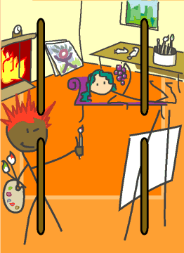

→
Damian Cugley →
Alleged Tarot 2002 →
png →
→
Damian Cugley →
Alleged Tarot 2002 →
png →
| « The Three of Wands | The Five of Wands » | |
|  | ||
|
The Four of Cups The Four of Swords The Four of Coins |
||
Upright: free expression, creative work, holiday
Reversed: restriction, regulations
The number 4 represents stability and completion—think of the four elements, the four corners of the earth, the four seasons. It thus stands for stability (as in ‘foursquare’). Combined with the creative intellectual energy of the suit of Wands, this gives a calm and creative environment where inspiration may be freely expressed. It may represent an actual place, or an event (like a holiday).
Four wands standing in a square define a room, so I have illustrated this card with an artist’s studio. The fire-place shows it is cozy and comfortable—and links us to the element of fire (associated with this tarot suit). The fours usually indicate a an ordered environment; in a studio this order is often invisible to the casual observer, who sees the clutter of brushes, tubes of paint, and pictures piled around as chaotic, and does not understand the organization that the owner of the studio does.
See also Thirteen’s description on the Aeclectic Tarot site
If your browser supports SVG, then you should visit the SVG version of this page. It is so much more cool!